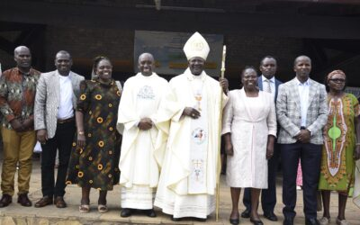
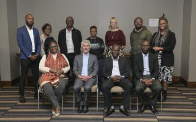
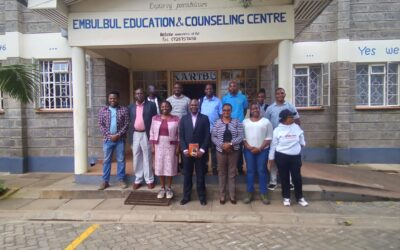
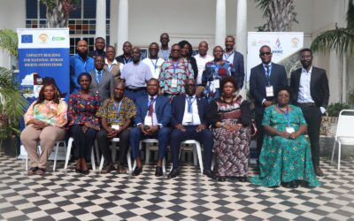
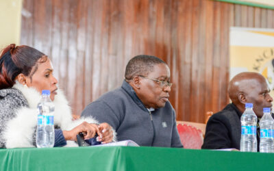
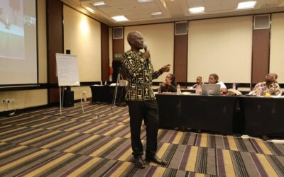
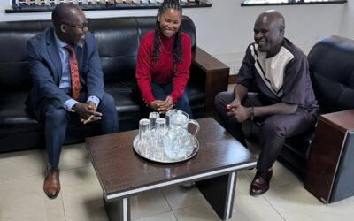
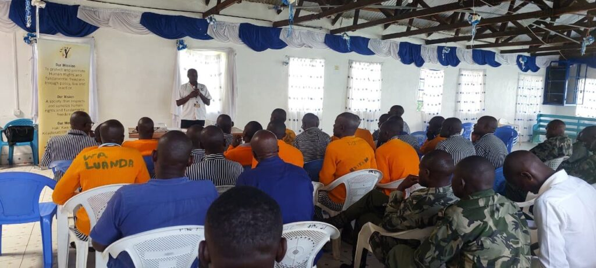
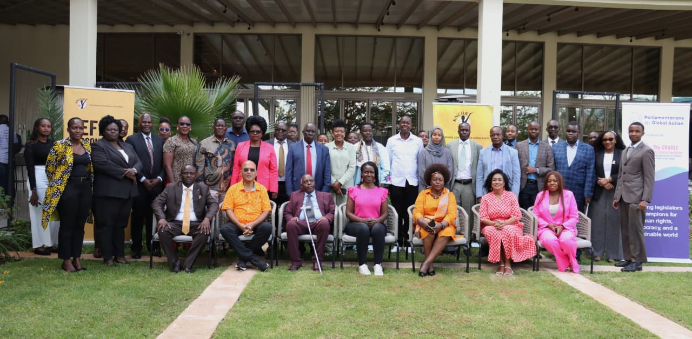

Reflections & field reports
First-hand accounts, reflections, and reports from Commissioner Dr. Dennis Wamalwa's human-rights work across Kenya and beyond — filter by focus area below.

Reparations, Verification & Public Awareness Exercise — Western Kenya
A week-long reparations verification and public-awareness exercise across eight counties in Western Kenya, under Commissioner Dr. Wamalwa's leadership.
Read
Workplace Violence is a Human Rights Issue, Not Just a Labour Concern
At the Kenya School of Government, Commissioner Dr. Wamalwa argued that workplace violence is fundamentally a human rights issue public institutions must confront.
Read
Commissioner Wamalwa Leads KNCHR to Mara University: Intersex-Rights Lecture & MOU Signing
Commissioner Dr. Wamalwa led a KNCHR delegation to Mara University, signed an MOU on human-rights education, and delivered a public lecture on intersex rights.
Read
Advancing Disability Rights: Commissioner Dr. Dennis Wamalwa Leads Strategic Engagement with Parliamentarians
Advancing Disability Rights: Commissioner Dr. Dennis Wamalwa Leads Strategic Engagement with Parliamentarians (June 2025). In a concerted effort to promote and protect the rights of persons with disabilities in Kenya, a team from the…
Read
A Defining Moment for Justice: Why Kenya's Reparations Framework Matters
By Commissioner Dr. Dennis Wamalwa. The pursuit of justice does not end with the acknowledgment of human rights violations. True justice demands accountability, restoration of dignity, and meaningful remedies for those who have suffered…
Read
A Grace-Filled Day: Bishop's Pastoral Visit Unites Faith, Leadership, and Community at EECC
On Thursday, 29th May 2025, the Emmanuel Education and Community Centre (EECC) welcomed the Bishop for a pastoral visit uniting faith, leadership and community...
Read
A Historic Win for Intersex Recognition in Kenya
Kenya has taken a monumental step in recognizing and protecting the rights of intersex persons. For the first time, intersex individuals have been officially included...
Read
A Journey of Purpose: Commissioner Dr. Dennis Wamalwa's Impactful Presence at the Centre for Human Rights, University of Pretoria
From the moment my boarding pass was issued for Johannesburg on 9 April 2025, I knew I wasn't just traveling—I was carrying a message...
Read
Advancing Intersex Rights: Stakeholders' Meeting on Advocacy, Institutional Development, and Legislative Engagement
On 22nd August 2025, a consultative meeting was convened to deliberate on strengthening intersex advocacy in Kenya and beyond. The session brought together key stakeholders...
Read
Championing Mental Health Rights in Correctional Facilities
Mental health is a fundamental human right that must be safeguarded for every individual, including those in places of detention. Across the world, correctional facilities continue to face growing challenges...
Read
Enhancing Access to Justice through Public Participation: Reflections from Nyeri and Garissa on the Draft Complaints and Enforcement Regulations 2025
The Kenya National Commission on Human Rights (KNCHR) continues to uphold its constitutional mandate by promoting and protecting the fundamental rights and freedoms through public participation forums in Nyeri and Garissa...
Read
Driving Equity, Inclusion, and Social Justice: Commissioner Dr. Wamalwa Dennis at the Devolution Conference 2025, Homa Bay County, Kenya (August 12–15, 2025)
The serene lakeside city of Homa Bay transformed into a national hub of dialogue and decision-making as leaders, policymakers, development partners and civil society gathered for the Devolution Conference 2025...
Read
Empowering Conversations on Intersex Rights: Dr. Dennis Wamalwa's Lecture at the Embulbul Educational & Counselling Center, Kajiado County
On May 8, 2025, Commissioner Dr. Dennis Wamalwa delivered a compelling public lecture titled "Understanding the Intersex and Human Rights in a Therapeutic Context"...
Read
Empowering Voices: My Journey to Gambia and the Fight for Human Rights Across Africa
My recent trip to Gambia was nothing short of transformative. From the moment I landed, I felt a sense of purpose and anticipation, knowing that this journey would...
Read
KNCHR Intensifies Public Participation on Draft Complaints and Enforcement Regulations 2025 in Uasin Gishu and Nakuru Counties
In a significant step toward enhancing human rights accountability in Kenya, the Kenya National Commission on Human Rights (KNCHR) has intensified its public participation forums in Uasin Gishu and Nakuru...
Read
Promoting Intersex Rights in Africa: A Recap of Commissioner Wamalwa's Facilitation Training in Pretoria, South Africa
Date: November 24, 2023. Location: Southern Sun, Pretoria, South Africa. On the 24th of November 2023, the Southern Sun in Pretoria hosted a pivotal facilitation training on intersex rights...
Read
Report on the Validation Workshop of the Business and Human Rights Curriculum and Training Manual for Businesses in Kenya
Date: 19th–20th May 2025. Venue: A & L Conference Centre, Machakos. Organized by: Kenya National Commission on Human Rights (KNCHR). The KNCHR held a validation workshop of the Business and Human Rights curriculum...
Read
Strengthening Institutional Collaboration: KNCHR Hosts Ethiopian Human Rights Commission for Study Visit
From 17th to 20th February 2026, the Kenya National Commission on Human Rights (KNCHR) hosted a high-level delegation from the Ethiopian Human Rights Commission (EHRC) at the Kimathi... for a study visit.
Read
Strengthening Intersex Advocacy Through Institutionalization: Follow-Up Meeting on Establishing an Intersex-Focused NGO
On 26th August 2025, Commissioner Dr. Wamalwa Dennis convened a follow-up meeting at CVS Plaza alongside Tara Ndichu and Advocate Ojiambo to deliberate on establishing an intersex-focused NGO...
Read
Strengthening Justice and Human Rights: KNCHR Engages Office of the Attorney General
In a significant step towards reinforcing human rights protection and enhancing the rule of law in Kenya, the Kenya National Commission on Human Rights engaged the Office of the Attorney General...
Read
Upholding Dignity Behind Bars: Commissioner Dr. Dennis Wamalwa Leads Human Rights Audit Across Kenyan Prisons
In a week marked by powerful emotions and renewed commitments, the Kenya National Commission on Human Rights (KNCHR), under the leadership of Commissioner Dr. Dennis Wamalwa, led a human rights audit across Kenyan prisons...
Read
Validation of the Public Inquiry on the Impact of Business Operations on the Rights of Indigenous Peoples in Kenya
"Sustainable development in Indigenous territories is only possible where human rights, dignity, consent, and equity are fully respected by both the State and business..."
Read
Words That Lead: Powerful Quotes from Commissioner Wamalwa's Human Rights Advocacy Journey
A curated collection of powerful quotes from Commissioner Wamalwa's human rights advocacy journey.
Read
Together for Intersex Families: Commissioner Dr. Wamalwa Dennis Joins Walk to Promote Visibility and Inclusion
Commissioner Dr. Wamalwa Dennis joined a walk to promote visibility and inclusion for intersex families.
Read
KNCHR Validates FGM Training E-Module in Garissa County
The Kenya National Commission on Human Rights (KNCHR) held a validation meeting in Garissa County to review and refine a newly developed FGM training e-module.
Read
Stakeholders Call for Collective Action to End Deep-Rooted Harmful Practices in Garissa County
A stakeholder engagement forum convened by the Kenya National Commission on Human Rights (KNCHR) in Garissa underscored the urgent need for collective action to end deep-rooted harmful practices.
Read
Commissioner Dr. Wamalwa Dennis Participates in High-Level Engagement on Disability Rights at Four Points by Sheraton
Commissioner Dr. Wamalwa Dennis joined key national stakeholders, legislators, and disability rights experts for a strategic capacity-building engagement at Four Points by Sheraton.
Read
KNCHR Launches the State of Human Rights Report 2024/2025: A Call to Reinforce Accountability and Constitutionalism
Commissioner Dr. Wamalwa Dennis today joined key stakeholders for the official launch of the State of Human Rights Report 2024/2025, a call to reinforce accountability and constitutionalism.
Read
Leveraging African Human Rights Instruments and Jurisprudence: Reflections from the 15th NANHRI Biennial Conference in Yaoundé, Cameroon
Yaoundé, Cameroon | 5–6 February 2026. Commissioner Dr. Wamalwa Dennis of the Kenya National Commission on Human Rights (KNCHR) joined fellow delegates at the 15th NANHRI Biennial Conference.
ReadFollow the journey
New reflections and field reports are added as the work continues. Add your voice to the movement for dignity and equal rights.